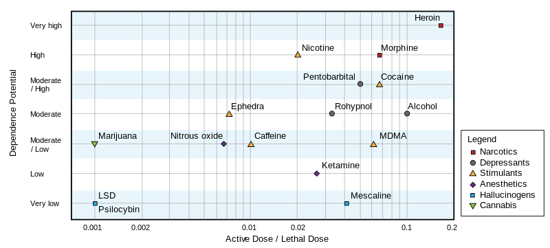
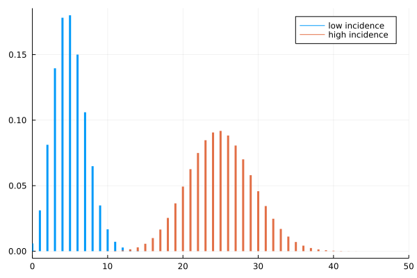
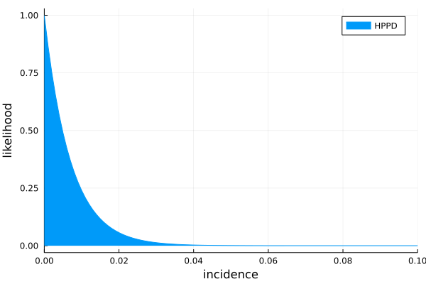
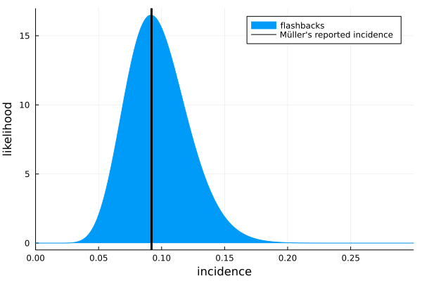
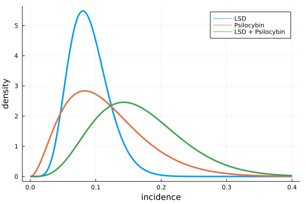
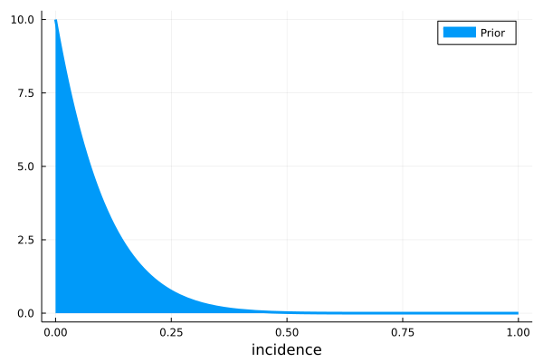
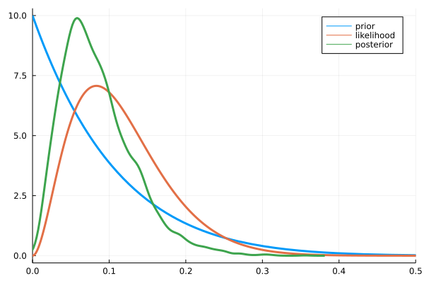
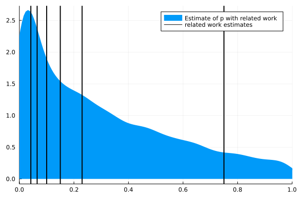
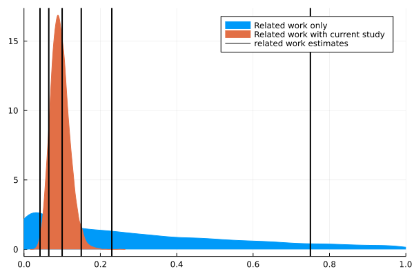
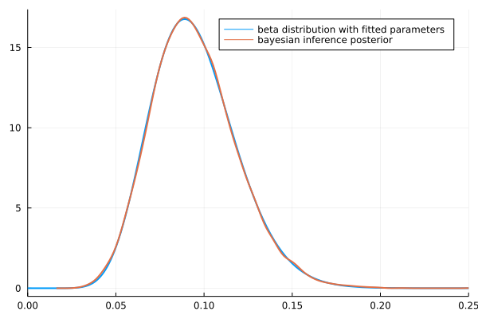

There is a nice documentary on Netflix, called Fantastic Fungi. It’s about mushrooms. It describes how mushrooms live, and how they can be used for different things. A particular use of mushrooms is described in more detail in the movie, which is the use of psilocybin (an hallucinogenic) in the treatment of depression. Impressively, test subjects and scientists describe that one single high dose of psilocybin led them to a mystical experience that they rated as one of the most significant in their lives [1]. They rank is as high as the birth of their first child, or the death of their parents.
The effects on well being seem to be astonishing. They show people who are being treated for cancer explain with a large smile that they’re not afraid of death anymore. One scientist explains that this happens after a single dose.
I was intrigued. And when I’m intrigued, I go on wikipedia . There, I see the following figure:

It seems psilocybin is far less addictive and less dangerous that legal drugs, like caffeine and alcohol. But the lethal dose only tells you about death. I don’t know how to interpret this plot: if LSD is dangerous enough to be illegal, how come alcohol is not?
Well, death is easy to measure, but the lethal dose is a low bar to pass. It doesn’t tell you if you will lose your mind. What are the risks besides death?
As one might expected, there’s a lot of shaky information about recreational drugs on the internet (that’s one problem of making something illegal, not much research is available). But I did find that the French government runs a research group on recreational drug use of French people. I’m sure other countries do it too, but since I’m French, I looked there.
In a pretty interesting report [2], the researchers report on pretty scary stories. One user reported going completely blind for a while. Another reported spending eleven days stuck in a horrific world, until he got hit by a (very real) car.
However, users also report having higher empathy, and saying that it helped them communicate with others, which is pretty consistent other studies say [3] and with what we’ve seen in Fantastic Fungi.
Now, those reports are about hallucinogens in general, which includes different molecules, which I presume, have different effects. Regardless, the users report a common fear, which is that of “getting stuck” with hallucinations forever. A disorder known as hallucinogen persisting perception disorder (HPPD). Wikipedia reports that some user get it after a single use. Which doesn’t sound great.
The wikipedia page on HPPD states that HPPD is under-researched. However, I did find a study on HPPD which seemed serious. They tried different hallucinogens on 142 people, and did not find a single case of HPPD, however, 13 users reported flashbacks, which are hallucinations that start, even after the effects of the drug have disappeared.
This is when I have to tell you that this long intro was all an excuse to do statistics. I have the following questions:
- What’s the probability of getting HPPD?
- What about flashbacks?
- How much did we learn from the study?
To answer that, we’ll use a statistical tool called the Beta-binomial model. It will give us things that the original study doesn’t. For example, the scientists report that they don’t have a lot of samples, so their report of 9% of cases of flashbacks should be taken with a grain of salt. The beta-binomial model instead gives us a way to quantify how certain we are about that number.
To understand this, you should know what a probability distribution is, and know a bit of programming.
Before we start, here are the papers I used in the intro:
- Griffiths, Roland R., et al. “Mystical-type experiences occasioned by psilocybin mediate the attribution of personal meaning and spiritual significance 14 months later.” Journal of psychopharmacology 22.6 (2008): 621-632.
- FRANCE, E. N. USAGES CONTEMPORAINS DE PLANTES ET CHAMPIGNONS HALLUCINOGÈNES. 2006.
- MacLean KA, Johnson MW, Griffiths RR. Mystical experiences occasioned by the hallucinogen psilocybin lead to increases in the personality domain of openness. J Psychopharmacol. 2011;25(11):1453-1461. doi:10.1177/0269881111420188
We will look in more detail at the following paper.
Müller, F., Kraus, E., Holze, F. et al. Flashback phenomena after administration of LSD and psilocybin in controlled studies with healthy participants. Psychopharmacology 239, 1933–1943 (2022). https://doi.org/10.1007/s00213-022-06066-z
Müller et al. study.
Before we start, here is some music to get you in the mood.
What They Say
The authors make a difference between “flashbacks” and HPPD. Flashbacks are “episodic reccurences of drug effects after the acute pharmacological effects have subsided”. While HPPD is defined as “persisting flashback phenomena which cause clinically significant distress”. They say that for most of the people who experienced flashbacks, the effects were not distressing, and so are not considered HPPD.
They say their studies are placebo-controlled, but they never mention the rate of flashbacks among the control group. They are re-using data from other studies, which I think were placebo controlled, but I think that here, we only consider people who did take the drugs.
Methods
Müller et al. ran other studies on the topic, but it seems that they asked them questions about flashbacks every time. So the population of test subjects is composed of different groups. The cocktail of drugs they took and the quantities also varied between groups.
- 142 healthy subjects
- 60 received LSD
- 27 received LSD + MDMA + D-amphetamine (that must be quite an afternoon)
- 31 received LSD + psilocybin
- 25 received psilocybin + escitalopram
Results
- They did not find a single person with HPPD. But since the sample is small and the disorder is rare, that’s not too surprising (we’ll come back to that!)
- 13 out of 142 reported flashbacks.
- Most of the test subjects reported the flashbacks were pleasant.
- Flashbacks with LSD: 7
- Flashbacks with psilocybin: 2
- Flashbacks with both: 4
Bayesian Inference
We’re interested in the probability $p$ of getting flashbacks, given that we took hallucinogens. So it will be a number between 0.0 and 1.0. I’m gonna call it incidence, though, to make a clear distinction between the probabilities in the stats sense, and proportion of halluginogens users who will get flashbacks, which is the medical question.
To study this incidence, we will use Bayesian Inference, I know people are not too familiar with that. So I’ll try to explain what it is. But the catchphrase is that Bayesian inference is about how to make math change its mind.
To do Bayesian inference, we need two things:
- The prior: Our current knowledge about this incidence, before we see what the study says.
- The likelihood: The probability of observing $n$ people with flashbacks, given:
- you have a sample of $N$ people who took hallucinogens,
- the incidence of get flashbacks is $p$.
What you get as an output is a distribution over the values that $p$ can take. This is called the posterior distribution of $p$. It’s a distribution over plausible values of $p$, which match your prior, and the data that you gathered.
So, why are they called “prior” and “posterior”? “Prior” comes from a latin word that means “before”. It’s the probability of the quantity we’re trying to estimate, before seeing the data. “Posterior” comes from a latin word that means “after”. It’s also a probability distribution over the quantity we’re trying to estimate, but this time, after doing the study.
Likelihood
Let’s start with the likelihood. I will talk about the prior later. We’re trying to estimate the incidence of flashbacks in general. To estimate that, we have a number of people, and see how many got flashbacks. The likelihood takes the problem backwards. If I had 100 people and knew the incidence is 5%, how many positive cases would I see?
This probability seems like it’s the opposite of what we’re looking for, but it’s still interesting, because we can try different values of $p$, and see how well it fits the data that we saw! Let’s imagine we know that $p = 5%$. That means that if we took 100 people, we would probably around 5 people. But seeing 4, or 6, is still somewhat plausible, right? There is a probability distribution for that, it’s called the binomial distribution.
The binomial distribution is the distribution of successes given:
- The number of trials
- The number of successes
In our case, a success is more of a failure (you get flashbacks). But the math works regardless.
using Distributions, StatsPlots
plot(Binomial(100, 0.05), label="low incidence", xrange=(0, 50),
w=3)
plot!(Binomial(100, 0.25), label="high incidence", xrange=(0,50),
w=3)

The plots above show that if the incidence of flashbacks was low (5%, in blue), we would see between 0 and 10 cases of flashbacks in our sample of 100 people. If it was 25% (in orange) instead, we would see (approximately) between 15 and 40 people in our sample of a 100.
What’s important to notice is that even if the real rate was exactly 5%, we wouldn’t observe exactly 5 people in our sample of a 100. How many people you use in your sample is also important. That’s why studies with more people have more weight.
Pseudo-Bayesian Approach
Müller et al did something similar to what we did above. They did not record a single case of HPPD, so they tried different values of $p$ and measured the probability of seeing zero cases.
We know the number of trials is 142 (that’s the number of people they tested), and that the number of positive cases was zero. We’ll vary $p$, and the binomial distribution will tell us how well the information matches.
incidences = [0.01, 0.02, 0.03, 0.04, 0.05]
for p_hppd in incidences
expected_positives = Binomial(142, p_hppd)
probability = pdf(expected_positives, 0)
println("incidence = $(round(p_hppd, digits=3))", " ",
"likelihood = $(round(probability, digits=3))")
end
incidence = 0.01 likelihood = 0.24
incidence = 0.02 likelihood = 0.057
incidence = 0.03 likelihood = 0.013
incidence = 0.04 likelihood = 0.003
incidence = 0.05 likelihood = 0.001
We can see that the likelihood of seeing zero cases is higher for $p = 1%$ than for the higher values.
The values themselves aren’t super important, it’s their order that we mostly care about.
We can go further and try that for any incidence between 0% and 100%.
incidences = 0.0:0.001:1.0
ps_hppd = []
for p_hppd in incidences
expected_positives = Binomial(142, p_hppd)
append!(ps_hppd, pdf(expected_positives, 0))
end
plot(incidences, ps_hppd,
xrange=(0.0, 0.10), xlabel="incidence", ylabel="likelihood",
fill=true,
label="HPPD")

What this plot says is that the incidence of zero matches really well the data, while an incidence of 0.01 matches the data a bit less well, and as we increase the incidence, it matches less and less well our data. As soon as the incidence passes above 3%, this graph says that it’s very unlikely that we would have seen zero case of HPPD. So what this tells us, is that the incidence of HPPD is probably less than 3%. If it was higher than that, we would have seen cases.
We can do the same for flashbacks! Müller et al observed 13 people who reported having flashbacks. We’ll try different values of $p$ and see how well that matches our data of 13 people / 142.
incidences = 0.0:0.001:1.0
ps_flashbacks = []
for p_flashback in incidences
expected_positives = Binomial(142, p_flashback)
append!(ps_flashbacks, pdf(expected_positives, 13))
end
plot(incidences, ps_flashbacks ./ sum(ps_flashbacks) * 1000,
xrange=(0.0, 0.30),
xlabel="incidence",
ylabel="likelihood",
fill=true,
label="flashbacks")
vline!([0.092], label="Müller's reported incidence", color="black", w=3)

Now, we see that an incidence of zero percent is not possible, since we did see some cases. A rate of between 5% and 15% is more plausible!
Müller reports 9% of cases of flashbacks (in black). It’s not surprising our likelihood peaks around 9%, that just means that the math works. However, the difference is that Müller et al. report a single number, while we can report an interval (5 to 15% are plausible).
How Likelihood Changes
In Müller et al’s study, they tried several different drugs. The problem is that they have a different number of people, and a different number of cases, for each. How can we compare these numbers?
Müller et al’s report that 60 subjects were given LSD, and 27 were given LSD + MDMA and D-amphetamine, so 87 subjects in total. In table 1 in the paper, they list 6 studies, and summing the number of subjects for each study, I also find 87 subjects. However, later in the paper, the authors report 90 subjects took LSD. They also report that they found 7 cases of flashbacks after taking LSD, and they say it amounts for 7.8% of the sample, which matches with 90 people. I’ll use 87.
Here are the numbers.
- LSD: 87 (90?) subjects, 7 flashbacks
- Psilocybin: 24 subjects, 2 flashbacks
- LSD + Psilocybin: 28 subjects, 4 flashbacks.
We will plot three different likelihoods, to see how they change with the number of subjects and cases.
function likelihood(incidences, total_subjects, number_cases)
ps_flashbacks = []
for p_flashback in incidences
expected_positives = Binomial(total_subjects, p_flashback)
append!(ps_flashbacks, pdf(expected_positives, number_cases))
end
# I will normalize the vector, to make different values easier to compare.
return ps_flashbacks ./ sum(ps_flashbacks) * length(ps_flashbacks)
end
incidences = 0.0:0.001:0.4
lik_lsd = likelihood(incidences, 87, 7)
lik_psilo = likelihood(incidences, 24, 2)
lik_both = likelihood(incidences, 28, 4)
plot(incidences, lik_lsd, label="LSD",
w=3,
xlabel="incidence",
ylabel="density")
plot!(incidences, lik_psilo, label="Psilocybin", w=3)
plot!(incidences, lik_both, label="LSD + Psilocybin", w=3)

What does this plot show us?
First, As you have more test subjects, your estimate of the plausible valies of the incidence get more precise. The curve for LSD (blue) is narrower than the curve for Psilocybin (red): Since psilocybin was tested on 24 subjects, we learned less about the incidence of flashbacks for psilocybin than for LSD (which was tested on 87 subjects).
Second, It seems that flashbacks are more likely when taking LSD + psilocybin than when taking psilocybin alone: The green curve seems shifted to the right (higher incidence). We can see that even though the estimates are quite imprecise.
Bayesian Inference
So far, we’ve looked at the data in the study. What about other studies? Maybe this particular study is flawed! Because yes, scientists also make mistakes. Science works much better when many different scientists do the same studies. It’s very rare that different groups of scientists all make the same mistakes.
It would be great if we could add information from what other researchers have found on the topic, and see how it agrees with the existing work.
This is when Bayesian inference comes in. It allows us to add some information that we take from somewhere else, and mix it with the likelihood that we just worked with.
To do this, we’ll use priors.
To do the math, I’ll use Turing. It’s a julia library that’s very convenient for doing these kinds of things. You don’t necessarily have to use Turing for this specific model (because the math works very well). However, if you have more complex models, the Turing code would look pretty much the same (even when the math would be much more difficult).
using Turing
The Beta-Binomial Model
We need a prior distribution for the plausible values of $p$ before we look at Müller et al’s data. When your likelihood is a binomial distribution, one prior that is convenient is the Beta distribution. It has two parameters, $\alpha$ and $\beta$. It’s a distribution over numbers between 0 and 1, and it makes the math work very well. So, we will use a beta prior, and a binomial likelihood. Then, Turing will work, and give us a distribution for the value of $p$, that matches both our data, and the related work.
- The likelihood is a Binomial distribution, with unknown parameter $p$, so we need a prior for it.
- The prior for $p$ is a Beta distribution, with parameters $\alpha$ and $\beta$.
You have to make a choice of $\alpha$ and $\beta$. We’ll see two methods to do that.
Including Related Work
Bayesians argue that one positive aspect of Bayesian inference is that it provides a principled way to include related work. We can use it to set your priors.
But some statisticians are not happy with priors. They would argue that this “prior information” is dangerous, because who decides how you defined your priors? With priors, you can make the stats say whatever you like!
So far, the answer that I obtained from Bayesians ranges from “it’s complicated” to “pick up something reasonable”. But Müller et al do mention other studies, and they give numbers. Estimates range between 15 and 75% of all users. Personally, I don’t think anybody would take these things if the probability of getting HPPD was of 75%, but maybe they mean 75% of users have experienced flashbacks? The DSM-V reports a prevalence of 4.2% among users of hallucinogens. That’s lower than the 9% that Müller et al found. How can I use these numbers in my stats?
In my case, the problem are the parameters of my beta distribution ($\alpha$ and $\beta$). It took me a long to find a method on how to do that. The trick is: related work is just more data.
To show how that works, I’ll start with a prior that I did pull from my hat. And then we’ll see how I can use the numbers in Müllers study.
Pulling A Prior From Your Hat
I’m gonna start with Beta(1,10) as a prior, and to be honest it’s not terribly realistic. But at least you can see the code you can use to run this things. We’ll still get a posterior. We will then plot the prior, likelihood and posterior with each other. The three things are three estimates of the same quantity (the incidence of flashbacks), but the three methods give different results.
- Again, we choose the prior. It’s our belief about how often flashbacks happen.
- The likelihood will give us incidences that match well the observed data.
- The posterior is a compromise between the two (using Bayes’ rule)
plot(Beta(1.0, 10.0), label="Prior", xlabel="incidence", w=3, fill=true)

@model function binomial_model(number_people, number_flashbacks)
p ~ Beta(1.0, 10.0)
number_flashbacks ~ Binomial(number_people, p)
end
binomial_model (generic function with 2 methods)
For this example, I’ll use the data for psilocybin only, because that makes it easier to see differences between posterior and likelihood.
# Inference
chain_simple_prior = sample(binomial_model(24, 2),
NUTS(0.65),
10000)
# Plotting
plot(Beta(1.0, 10.0), xrange=(0.0, 0.5), label="prior", w=3)
plot!(0:0.001:1.0, likelihood(0:0.001:1.0, 24, 2), label="likelihood", w=3)
density!(chain_simple_prior[:p], label="posterior", w=3)

You can see that the posterior (in green) has roughly the same shape as the likelihood (in red), but that it’s shifted to the right. This shift comes from the prior (in blue).
I see a lot of papers who complain that their results are not very valid, because they don’t have a lot of data. This is when Bayesian inference is very nice, because as you add more data, the likelihood becomes more and more precise, and the priors “wash out”. But if you don’t have a lot, you still get something. The minimum number of data points you need is 1.
You may wonder why the curve of the posterior is a bit wonky. That is because Turing computes an approximation. It returns a list of plausible values of $p$, in a list. It’s not perfectly what the math would suggest. But in many cases, the math would be impossible to do. So we use that for now.
A Better Prior
Looking at the posterior, we could say “the incidence of flashbacks is between 0 and 25%”. Some critics my decide that my posterior looks like that, just because my prior was the curve in blue. If it was different, I would have a different result. How do I justify that?
To make things better, I’m gonna use the numbers I saw in Müller et al’s study.
Since I’m looking for a way to pick the parameters $\alpha$ and $\beta$ of my Beta distribution. We’ll just use the exact same technique. But this time, I’m trying to estimate $\alpha$ and $\beta$, based on estimates for $p$ that the study listed.
# We make a model for the prior work.
@model function model_prior_work()
α ~ Exponential(1.0)
β ~ Exponential(1.0)
# RELATED WORK
# Source: Studerus
0.1 ~ Beta(α, β)
# Stanton and Bardoni
0.23 ~ Beta(α, β)
# Vizeli and Liechti (MDMA)
0.065 ~ Beta(α, β)
# DSM-V
0.042 ~ Beta(α, β)
# Someone suggested 15% (Hermle et al?)
0.15 ~ Beta(α, β)
# Someone suggested 75% (wat) (Martinotti et al?)
0.75 ~ Beta(α, β)
# What p would we get, if we looked only at the prior work?
p ~ Beta(α, β)
return p
end
model_prior_work (generic function with 2 methods)
chain_prior = sample(model_prior_work(), NUTS(0.65), 10000)
# We can get the estimates of p with the "generated quantities" function
ps = generated_quantities(model_prior_work(), chain_prior);
# And now we plot the distribution with related work estimate
density(ps |> vec, xrange=(0.0, 1.0), label="Estimate of p with related work", w=3, fill=true)
related_work = [0.1, 0.23, 0.065, 0.042, 0.15, 0.75]
vline!(related_work, label="related work estimates", color="black", w=2)

That’s a very strange distribution! What we see, though, is that it leaves room for the higher estimates!
Tying It All Together
We can include the related work evidence directly in our statistical model. To do that, our prior for the incidence (the Beta distribution) will have parameters that we’re also trying to estimate. These, will have priors too. These are called hyper-priors. The model has three parts:
- The likelihood is a Binomial distribution, with unknown parameter $p$, so we need a prior for it.
- The prior for $p$ is a Beta distribution, but it has unknown parameters $\alpha$ and $\beta$, so we need priors for these too.
- We’ll add the related work as evidence, to estimate $\alpha$ and $\beta$.
@model function model_with_prior_work(total_n, cases_n)
# I wasn't sure how to set these values, so I'll estimate them too!
α ~ Exponential(1.0)
β ~ Exponential(1.0)
# RELATED WORK
# Source: Studerus
0.1 ~ Beta(α, β)
# Stanton and Bardoni
0.23 ~ Beta(α, β)
# Vizeli and Liechti (MDMDA)
0.065 ~ Beta(α, β)
# DSM-V
0.042 ~ Beta(α, β)
# Someone suggested 15% (Hermle et al?)
0.15 ~ Beta(α, β)
# Someone suggested 75% (wat)
0.75 ~ Beta(α, β)
# THE CURRENT STUDY
# We use α and β from with more info from the related work
# to get a probability of HPPD, called p.
p ~ Beta(α, β)
cases_n ~ Binomial(total_n, p)
end
Now I’ll use the data for the full study.
chain_2 = sample(model_with_prior_work(142, 13), NUTS(0.65), 10000)
How Much Did We Learn?
I think we can use the posterior, to estimate how much we learned from the study, I’ll plot the two estimates of $p$ together.
density(ps |> vec, label="Related work only", fill=true)
density!(chain_2[:p], label="Related work with current study",
xrange=(0.0, 1.0),
fill=true)
vline!(related_work, color="black", label="related work estimates", w=2)

The orange distribution is much narrower, so we’ve made big progress! For example, that means that we rejected the work that said that the incidence of flashbacks was roughly 75%.
How To Report Your Posterior
This model is convenient because you don’t have to report a big list of numbers. It’s just a beta distribution with two numbers.
estimated_posterior = fit(Beta, chain_2[:p])
Beta{Float64}(α=13.751132773589656, β=131.45206487743914)
plot(estimated_posterior, w=2, label="beta distribution with fitted parameters")
density!(chain_2[:p], xrange=(0.0, 0.25), w=2, label="bayesian inference posterior")

This shows an excellent match between the two. So if someone wants to make a new study on the topic of flashbacks, they can use the Beta distribution above, as a prior. It includes both the related work and the evidence the experiment!
Conclusion
With all that stuff, what’s the incidence, then?
# To get an interval, we can use quantiles of the posterior distribution!
interval_percents = quantile(chain_2[:p] |> vec, [0.05, 0.95]) * 100
interval = round.(interval_percents)
2-element Vector{Float64}:
6.0
14.0
The incidence of flashbacks when using hallucinogens is between 6% and 14%. Müller et al. report roughly 9%, but we can also see that there is a bit of uncertainty in that number. I will let you decide if 6 to 14% is a high risk to take or not.
If You’re Bored
If you got interested in the bayesian inference part, Richard McElreath has both amazing lectures on the topic, and a very nice book about that . His book is how I learned all these things.
Exercises
- If you wanted to get a more precise estimate, what would you do?
- This experiment mixes different molecules (psilocybin, LSD, etc.) Can we make a model that makes estimates, for each different molecule?